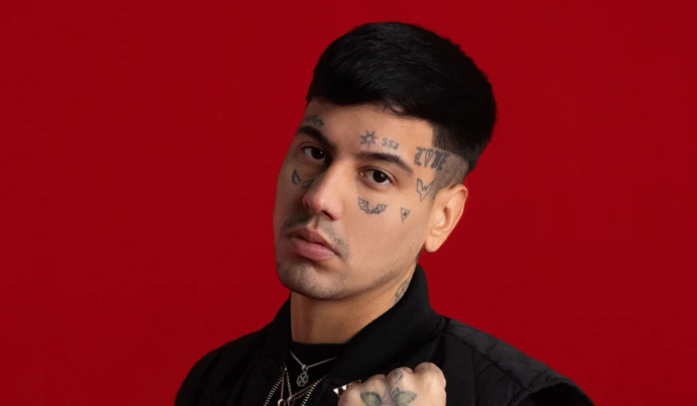

Mi cantante favorito es Duki.
Duki, cuyo nombre real es Mauro Ezequiel Lombardo, nació en Buenos Aires, Argentina, el 24 de junio de 1996. Es un rapero y compositor reconocido como uno de los principales exponentes y pioneros del trap latino en Argentina y a nivel internacional. Inició su carrera en las batallas de freestyle, ganando notoriedad en competencias como El Quinto Escalón. Posteriormente, lanzó sencillos exitosos, su álbum debut Súper Sangre Joven y ha seguido lanzando música que lo ha consolidado como una figura influyente en la escena urbana.
